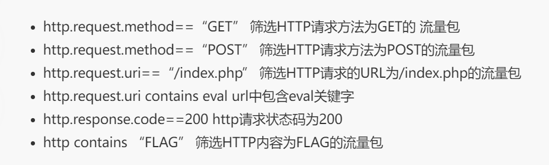

流量分析
Wireshark
Wireshark过滤语法
IP过滤：
ip.addr eq 192.168.1.107
来源：ip.src eq 192.168.1.107
目标： ip.dst eq 192.168.1.107端口过滤
tcp.port eq 80
tcp.port == 80
目标端口80：tcp.dstport == 80
来源端口80：tcp.srcport == 80
过滤端口范围：tcp.port >= 1 and tcp.port <= 80协议过滤
tcp、udp、arp、icmp、http、smtp、ftp、dns、msnms、ip、oicq、bootp等MAC过滤
eth.addr eq A0:00:00:04:C5:84
目标mac：eth.dst == A0:00:00:04:C5:84
来源mac：eth.src eq A0:00:00:04:C5:84长度过滤
udp.length == 26（udp固定长度8+udp下面那块数据包之和）
tcp.len >= 7 （ip数据包即tcp下面那块数据,不包括tcp本身）
ip.len == 94 （除以太网头固定长度14,其它都算是ip.len,即从ip本身到最后）
frame.len == 119 （整个数据包长度,从eth开始到最后）http模式过滤
TCP参数过滤:
1.TCP（传输控制协议）作用：提供可靠的、面向连接的通信，确保数据包按顺序传输且不丢失。
应用：HTTP、FTP、SMTP等基于TCP的应用协议。
过滤应用：可以过滤特定端口的TCP流量，如80端口（HTTP）、443端口（HTTPS）。
2.UDP（用户数据报协议）作用：提供无连接的、不可靠的数据传输，适用于需要快速传输的小数据包的应用。
应用：DNS查询、视频流、在线游戏等。
过滤应用：可以根据应用过滤场景特定端口的UDP流量，如53端口（DNS）。
- ARP（地址解析协议）
- 作用：将IP地址解析为物理MAC地址，用于同等局域网内的通信。
- 过滤应用：可用于检测和阻止ARP欺骗攻击。
- ICMP（互联网控制消息协议）
- 作用：用于网络设备之间发送错误消息和操作信息，如ping命令。
- 过滤应用：可以过滤ping请求和响应，以防止ICMP洪水攻击。
- HTTP（超文本传输协议）
- 作用：用于在Web浏览器和服务器之间传输超文本，主要用于网页访问。
- 过滤应用：可以过滤HTTP流量以控制网页访问或监控网络使用情况。
- SMTP（简单邮件传输协议）
- 作用：用于电子邮件的发送和转发。
- 过滤应用：可过滤SMTP流量以防止垃圾邮件或监控邮件通信。
7.FTP（文件传输协议） - 作用：用于在客户端和服务器之间传输文件。
- 过滤应用：可限制或监控FTP流量以确保安全的文件传输。
- DNS（域名系统）
- 作用：将域名解析为IP地址。
- 过滤应用：可以过滤DNS查询，防止以DNS欺骗攻击或拦截恶意网站。
- MSNMS（微软网络信使服务）
- 作用：用于即时消息传递（如旧版的Windows Messenger）。
- 过滤应用：可以阻止即时消息应用程序的使用。
- IP（互联网协议）
- 作用：提供网络设备之间的基本数据传输功能。
- 过滤应用：可以根据源或目标IP地址进行过滤，控制哪些设备可以通信。
11.OICQ（开放式ICQ） - 作用：基于ICQ协议的即时通讯软件，类似于早期的QQ。
- 过滤应用：可以过滤此类即时通讯流量以控制员工使用情况。
- BOOTP（引导协议）
- 作用：用于从服务器获取IP地址等信息，类似于DHCP。
- 过滤应用：可用于控制和监控网络中的动态IP地址分配。
jwt认证
[jwtTOKEN在线解码] https://tooltt.com/jwt-decode/
传统session认证：
http无状态协议，基于cookie保存信息并在下一次发送的方式，是传统的session认证
缺点：用户过多时服务器开销大、限制了应用扩展力、cookie被截获时的安全问题
基于token的鉴权机制：
类似于http无状态，不在服务端保存信息
流程：
- 用户使用用户名密码来请求服务器
- 服务器进行验证用户的信息
- 服务器通过验证发送给用户一个token
- 客户端存储token，并在每次请求时附送上这个token值
- 服务端验证token值，并返回数据
token必须要在每次请求时传递给服务端，应保存在请求头里。且服务端要支持CORS策略
JWT由三段信息组成：头部（header）、载荷（payload）、签证（signature）。三部分由“.”分隔连接
形如：xxxxxxx.yyyyyyyy.zzzzzz
header由两部分构成：token类型声明和加密算法名称
如： {
‘typ’: ‘JWT’,
‘alg’: ‘HS256’
}
然后将头部进行base64加密，便得到jwt第一部分
payload包含声明（要求）
声明是关于实体(通常是用户)和其他数据的声明。声明有三种类型: registered, public 和 private。
Registered claims : 这里有一组预定义的声明，它们不是强制的，但是推荐。
比如：iss (issuer), exp (expiration time), sub (subject), aud (audience)等。Public claims : 可以随意定义。
Private claims : 用于在同意使用它们的各方之间共享信息，并且不是注册的或公开的声明。 下面是一个例子：
如：{"sub": '1234567890', "name": 'john', "admin":true}
对payload进行Base64编码就得到JWT的第二部分